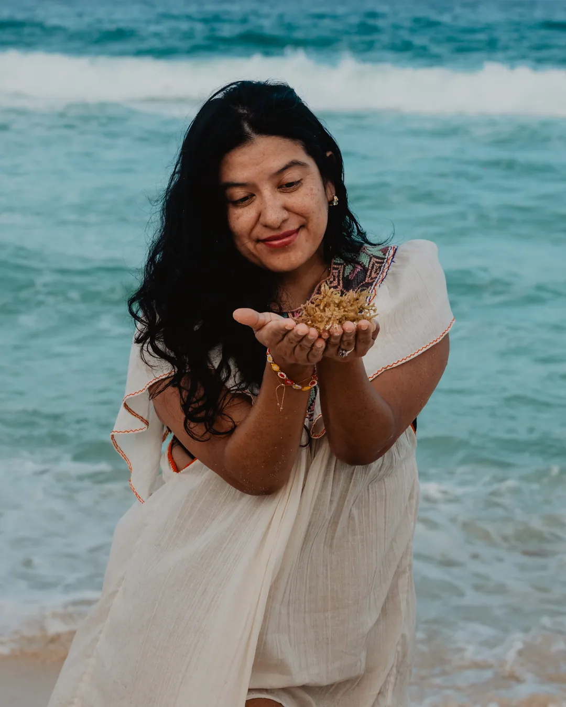
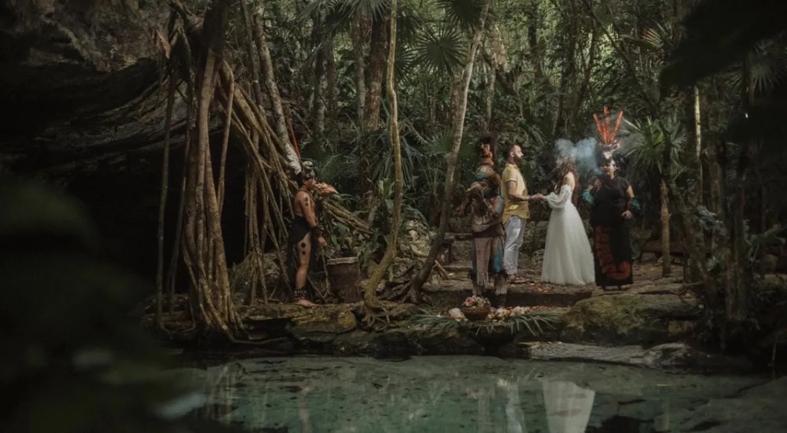
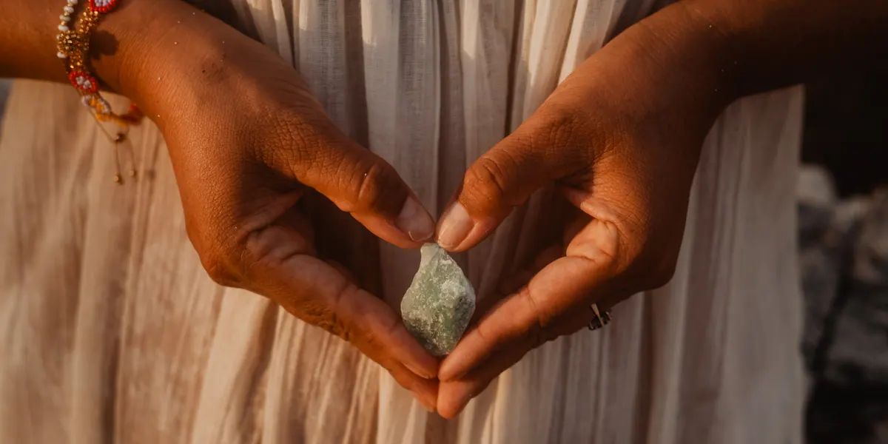

Tres lenguajes de movimiento para la capa wow, de escuelas distintas. La identidad (paleta tierra/cacao, Playfair + Inter, fotografía real) no cambia — lo que cambia es cómo se mueve. Cada celda anima su mini-hero al cargar (botón ↺ para repetir), la transición de página va en bucle y la card responde al hover real.
Escuela: minimalismo silencioso (Kenya Hara / Aman)
La página respira como un spa: una cortina de luz se retira de la fotografía, el titular se enfoca palabra a palabra como incienso que se asienta. Nada se mueve dos veces.
OOL · Ceremonias de corazón
Rituales a medida en Mallorca, donde la sabiduría ancestral se cuida con precisión de hotel de lujo.
Diseñemos tu ceremonia →
Transición de página
Hover de card (prueba)

Bodas holísticas con 4 elementos
Descubrir →Para OOL: es el plan técnico ya validado — cortina crema sobre el hero, palabras blur→nítido, fade+lift entre páginas, levitación serena en cards. Riesgo: el más bajo; máxima coherencia con "calma con presencia".
Escuela: editorial fotográfica orgánica (Cereal / Six Senses)
La fotografía es la protagonista y se mueve como el agua: deriva lenta al entrar, respira mientras lees, gana profundidad con el scroll (parallax más profundo). El texto sube en olas solapadas.
OOL · Ceremonias de corazón
Rituales a medida en Mallorca, donde la sabiduría ancestral se cuida con precisión de hotel de lujo.
Diseñemos tu ceremonia →Transición de página
Hover de card (prueba)

Bodas holísticas con 4 elementos
Descubrir →Para OOL: mismo esqueleto técnico pero más cinematográfico: la imagen del hero nunca está quieta del todo (respiración 9s casi imperceptible), parallax al 14-16%, crossfade con profundidad entre páginas. Riesgo: el movimiento perpetuo debe quedarse bajo el umbral de lo consciente o cansa.
Escuela: geometría artesanal (Klim / grabado contemporáneo)
El símbolo maya manda: las imágenes se abren como un sello de piedra, líneas finas de cacao se dibujan como trazos de orfebre, la tipografía aprieta su tracking al posarse. Precisión de taller.
✦OOL · Ceremonias de corazón
Rituales a medida en Mallorca, donde la sabiduría ancestral se cuida con precisión de hotel de lujo.
Diseñemos tu ceremonia →Transición de página
Hover de card (prueba)
Bodas holísticas con 4 elementos
Descubrir ✦Para OOL: los reveals usan clip-path (sello que se abre) y marcos finos; el ✦ del marquee se convierte en firma de la casa (gira en hovers, se dibuja en separadores); transición = barrido de línea cacao. Riesgo: es la más "de autor" — un punto más cerca de agencia que de spa; bien dosificada, es la más memorable.